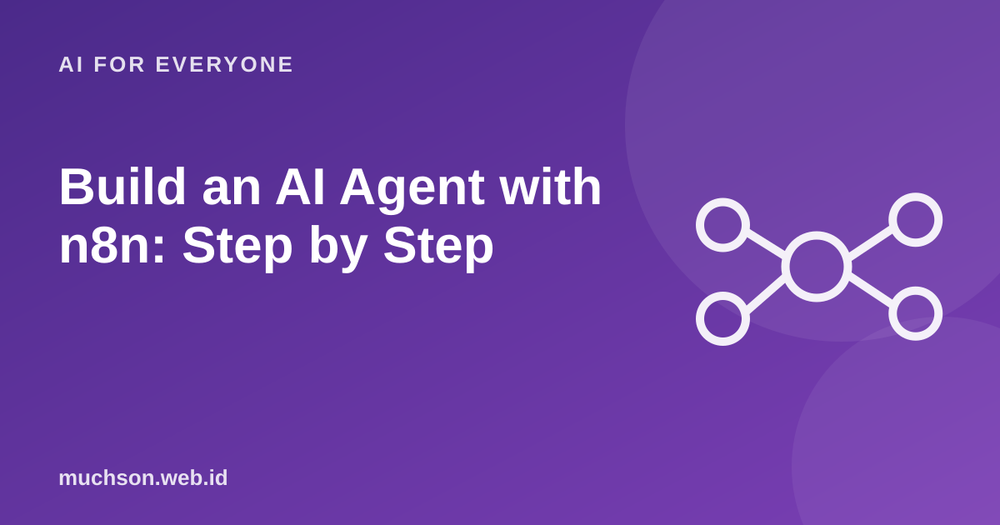

Home › Articles › AI for Everyone
AI for EveryoneBuild an AI Agent with n8n: Step by Step
n8n has dedicated nodes for AI agents that link a language model, tools and memory on the same canvas as an ordinary automation flow. The best results come from a narrow task and clear limits, not an all-purpose agent.

The components of an agent
Text description of the diagram
- Trigger: a message, schedule or webhook
- Agent: the brain: a language model
- Tools: read sheet, search, send
- Memory: conversation context
- Output: an answer or an action
Steps to build it
- Define one narrow task, for example "answer questions about the class timetable from a spreadsheet".
- Pick a trigger: a chat message, a webhook or a schedule.
- Add the agent node and connect it to the language model of your choice.
- Give only the tools it needs: read sheet, search documents, send email.
- Write the system prompt: role, limits, answer format and what to do when it does not know.
- Add memory if it needs to remember the conversation context.
- Test with real questions, including ones that are deliberately confusing.
Keeping the agent safe
Don't overdo it
If the steps are always the same, an ordinary flow without an agent is cheaper, faster and more predictable. Use an agent only for the parts that need judgement.
FAQ
Which model suits an agent?
Choose by task, cost and privacy. Test several models on your real questions before deciding.
How do I reduce made-up answers?
Limit the sources to your data, require an "I don't know" answer when there is none and test with trick questions.
Can an agent run unsupervised?
For low-risk tasks, yes. For important actions still include human approval and watch the logs.